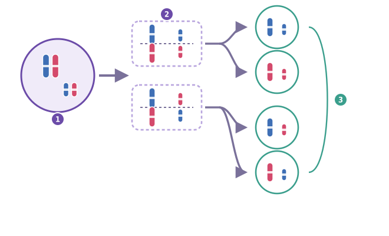
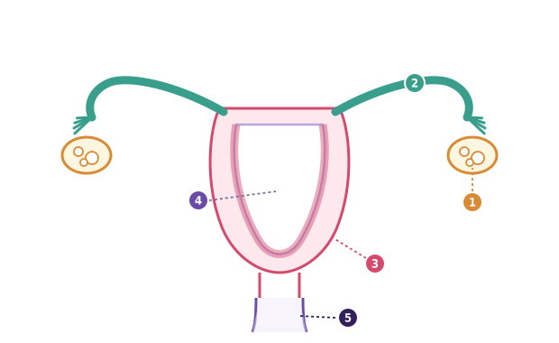
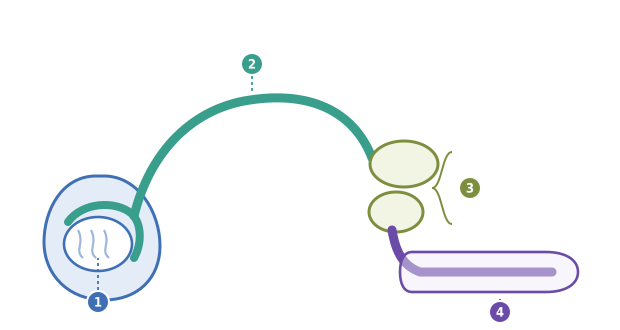
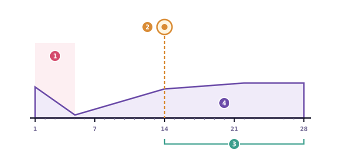
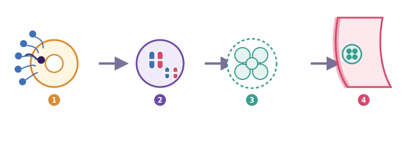

✎ Clica per editar · Ctrl+B negreta · × rosa elimina · Ctrl+Z desfés · Ctrl+S desa
✕
🧬
Créixer i reproduir-se · Sessió 2 de 4
Com funcionem? La biologia de la reproducció
Per quina raó no acumulem cromosomes generació rere generació?
Biologia i Geologia · 3r ESO IE Temple
✕
Amb suport visual
✕
⏱️ Sessió de 2 h
✕
✕
Nom:
Data:
C
✕
🎯 Objectius d'aprenentatge d'avui (Nivell C)
Sé que un gàmeta porta una sola còpia de cada cromosoma.
Sé què passa a la fecundació: dos gàmetes s'uneixen i es forma el zigot.
Sé llegir el dibuix del cicle: quin dia comença i quin dia surt l'òvul.
Sé que un cicle pot durar entre 21 i 35 dies i que això és normal.
🔤 Vocabulari d'avui
cromosoma — cada un dels paquets on la cèl·lula guarda les instruccions.
ovari — on es fabriquen els òvuls i part de les hormones.
testicle — on es fabriquen els espermatozoides i part de les hormones.
trompa — conducte on l'òvul es pot trobar amb l'espermatozoide.
úter — òrgan de paret gruixuda on es pot implantar l'embrió.
embrió — el conjunt de cèl·lules que es forma quan el zigot comença a dividir-se.
implantació — quan l'embrió s'enganxa a la paret de l'úter.
hormona — missatge químic que una glàndula envia per la sang.
regla (o menstruació) — els dies en què la paret de l'úter es desprèn i surt per la vagina.
dia fèrtil — el dia de l'ovulació i els dies del voltant, quan un òvul es pot trobar amb un espermatozoide.
parella de cromosomes — els cromosomes van de dos en dos: un ve del pare i l'altre de la mare.
gàmeta — cèl·lula sexual: l'òvul i l'espermatozoide.
meiosi — divisió que fa gàmetes amb una sola còpia de cada cromosoma.
fecundació — quan un òvul i un espermatozoide s'uneixen.
zigot — la primera cèl·lula d'un individu nou, just després de la fecundació.
ovulació — el moment en què l'ovari deixa anar un òvul.
cicle menstrual — el que es repeteix cada mes a l'aparell reproductor femení; el dia 1 és el primer dia de la regla.
✕
0
Idees prèvies ⏱️ 7 min
Primer encercles, després escrius. No es corregeix
✕
Escriu i dibuixa el que penses ara: no es corregeix. El tornaràs a mirar al final de la unitat.
✕
📮
La bústia. Avui el professor respon la primera pregunta de la caixa. Les preguntes es llegeixen copiades a màquina, mai el paper original, i mai es pregunta qui l'ha escrita. La caixa continua oberta: hi pots deixar preguntes noves qualsevol dia, sense posar-hi el nom.
✕
🔗
Ve de la primera unitat. Allà vas veure dues divisions: la mitosi, que fa dues cèl·lules idèntiques, i la meiosi, que fa cèl·lules sexuals amb una sola còpia de cada cromosoma. Avui la meiosi deixa de ser un nom i passa a explicar una cosa concreta: d'on surten els gàmetes.
📖 Per llegir
Les teves cèl·lules tenen els cromosomes de dos en dos: de cada un en tens dues còpies. Un gàmeta és una cèl·lula especial: l'òvul i l'espermatozoide.
1. Encercla el que et sembla ara.
Un gàmeta porta… una còpia de cada cromosomales dues còpies de cada cromosoma
✕
2
Escriu per quina raó ho has triat.
3. Dibuixa què passaria si cada gàmeta portés les dues còpies: tu, els teus fills, els teus néts.
✕
tres generacions
✕
1
Les targetes de cromosomes ⏱️ 26 min
Per parelles de treball. El primer intent ja està fet d'exemple
📖 Per llegir
Teniu vuit targetes: quatre blaves (números 1, 2, 3 i 4) i quatre roses (números 1, 2, 3 i 4). Cada número és un parell: la blava 1 i la rosa 1 van juntes. Fer la meiosi és repartir una targeta de cada parell al gàmeta. Al gàmeta hi han d'anar quatre targetes: una del parell 1, una del 2, una del 3 i una del 4.
✕

🖼️De la cèl·lula als quatre tipus de gàmeta
Fig. F3 — Aquí n'hi ha només dos parells per veure-ho més clar. El color diu d'on ve cada cromosoma.
🔢 Què és cada número
① Cèl·lula de partida — dos parells de cromosomes (un blau i un rosa a cada parell).
② El moment de l'atzar — les parelles es poden col·locar de dues maneres.
③ Els quatre tipus de gàmeta possibles: cada un porta una sola còpia de cada cromosoma.
4. Feu la meiosi quatre vegades i anoteu què ha anat al gàmeta. El primer intent ja hi és, d'exemple.
Intent
Targetes que han anat al gàmeta
Quantes n'hi ha
1r
1 blava · 2 rosa · 3 rosa · 4 blava
4
2n
3r
4t
5. Encercla.
Els quatre gàmetes que heu fet són… tots igualsdiferents entre ells
Això passa perquè el repartiment de cada parell es fa… a l'atzarsempre en el mateix ordre
📖 Per quina raó la meitat
Les teves cèl·lules tenen els cromosomes per parelles: de cada un en tens dues còpies, una que va venir del pare i una de la mare. La meiosi reparteix un de cada parella a cada gàmeta: el gàmeta no té parelles, té una sola còpia de cada cromosoma.
Quan dos gàmetes s'uneixen a la fecundació, el zigot torna a tenir les parelles senceres. Les nostres cèl·lules tenen 46 cromosomes, és a dir 23 parells. Si el gàmeta portés les parelles senceres, cada generació doblaria el nombre de cromosomes: 46 → 92 → 184. En tres generacions seria insostenible.
I com que el repartiment de cada parella es fa a l'atzar, dos germans reben combinacions diferents: per això s'assemblen sense ser idèntics.
📦 Banc de paraules (no cal fer-los servir tots)
vuitquatrel'òvull'espermatozoideel zigotla meitat
6. Completa amb el banc de paraules.
A la fecundació s'uneixen i . La cèl·lula que en surt es diu . Si cada gàmeta portava quatre targetes, el zigot en té .
✕
2
Els aparells i el cicle ⏱️ 31 min
Primer mires la figura, després respons
📖 Per llegir
Els gàmetes no es fabriquen en qualsevol lloc. Els òvuls es fan als ovaris i els espermatozoides als testicles. Després viatgen per uns conductes fins al lloc on es poden trobar.
✕

🖼️Aparell reproductor femení, esquema
Fig. F1 — Cada número del dibuix és una peça. Sota hi tens la llista.
🔢 Què és cada número
① Ovari — hi maduren els òvuls.
② Trompa — hi viatja l'òvul; és on es pot trobar amb l'espermatozoide.
③ Paret de l'úter — la part gruixuda que creix i es desprèn cada mes. És aquí on s'implanta l'embrió.
④ Interior de l'úter — l'espai buit del mig.
⑤ Coll de l'úter i vagina — el pas cap a fora.
✕

🖼️Aparell reproductor masculí, esquema
Fig. F2 — Cada número del dibuix és una peça. Sota hi tens la llista.
🔢 Què és cada número
① Testicle — l'oval de dins de la bossa: s'hi fabriquen els espermatozoides.
② Conducte — el camí que fan just en sortir del testicle.
③ Glàndules (les dues) — hi afegeixen el líquid que els transporta.
④ Conducte de sortida — el tram final, compartit amb l'orina.
7. Escriu el número que li toca a cada frase. Mira les llegendes de les figures.
Frase
Número (F1)
Número (F2)
Aquí es fabriquen els gàmetes
Per aquí comencen el viatge en sortir-ne
Aquí es pot implantar l'embrió
—
Aquí s'hi afegeix el líquid que els transporta
—
📖 Per llegir
Els ovaris i els testicles fan dues feines alhora: fabriquen gàmetes i fabriquen hormones. Una hormona és un missatge que viatja per la sang.
8. Encercla.
Els ovaris fabriquen… només òvulsòvuls i hormones
📖 El cicle, mes a mes
Unes hormones fan dues coses alhora: fan madurar un òvul i fan engruixir la paret de l'úter, per si hi arriba un embrió. A la meitat del cicle l'òvul s'allibera: és l'ovulació.
Si no hi ha fecundació, la paret engruixida es desprèn: això és la regla, i el primer dia de la regla és el dia 1 del cicle següent.
I una cosa que sovint no es diu: hi ha persones que no tenen cicles o que els tenen molt irregulars, per moltes raons diferents, i també és normal.
Un cicle no dura 28 dies per a tothom: en dura entre 21 i 35, i tots són normals. El que sol ser bastant estable és el tram que va de l'ovulació a la regla següent: uns 14 dies. El tram del principi és el que varia. Per tant l'ovulació no cau el dia 14 fix: cau uns 14 dies abans de la regla següent.
✕

🖼️El cicle menstrual, dia a dia
Fig. F4 — Els números de sota són els dies. La línia lila és el gruix de la paret de l'úter: com més amunt, més gruixuda.
🔢 Què és cada número
① Dies de la regla — la paret de l'úter es desprèn.
② Ovulació — l'ovari deixa anar l'òvul.
③ Tram estable — de l'ovulació fins a la regla següent: uns 14 dies.
④ Gruix de la paret de l'úter — com més amunt arriba la línia, més gruixuda és.
9. Mira la figura F4 i completa. La primera ja hi és, d'exemple.
Pregunta
Resposta
Quin dia comença el cicle?
el dia 1
Quin dia surt l'òvul? (mira on és la marca ②)
A la gràfica, quantes vegades baixa la línia lila fins a baix?
Quants dies hi ha del dia 14 al dia 28?
El dia 20, la paret és gruixuda o prima?
10. Encercla.
La regla és… la paret de l'úter que es desprènl'òvul que surt de l'ovari
Un cicle que dura 35 dies és… normalmassa llarg
✕

🖼️De la fecundació a la implantació
Fig. F5 — Quatre moments, un darrere l'altre.
🔢 Què és cada número
① Fecundació — un espermatozoide entra dins de l'òvul.
② Zigot — una sola cèl·lula, ja amb les parelles senceres.
③ Divisions — el zigot es divideix per mitosi.
④ Implantació — l'embrió s'enganxa a la paret de l'úter.
✕
3
L'enigma de la Laia ⏱️ 18 min
Amb el company o la companya del costat. Segueix els quatre passos
📖 Per llegir
Recorda la frase important: l'ovulació cau uns 14 dies ABANS de la regla següent. Si el cicle dura 28 dies, això cau al dia 14. Però si el cicle dura més, cau més tard.
L'enigma. La Laia té un cicle de 35 dies. Una amiga li diu que el seu dia fèrtil és el dia 14. Una altra li diu que 35 dies és «anormal».
11. Fes el càlcul: 35 − 14 =
12. Encercla.
El dia que la Laia ovularia és aproximadament el… dia 14dia 21
Un cicle de 35 dies… és dins del que és normalvol dir que hi ha un problema
13. Ara escriu tu. Una línia per pas.
✕
👀 OBSERVO
El cicle de la Laia dura… i el del dibuix de la figura F4 dura…
❓ EM PREGUNTO
Per quina raó el dia 14 no li serveix a la Laia?
🔗 CONNECTO
Ho connecto amb la frase «l'ovulació cau 14 dies abans de…»
💡 DEDUEIXO
Per tant, la Laia ovula cap al dia… La primera amiga s'equivoca perquè… i la segona s'equivoca perquè…
✕
🎟️
Full de sortida (7 min). Al final de la classe el professor et donarà un full a part amb tres preguntes. Es fa tot sol/a i es recull. Aquesta fitxa te la quedes tu.
✕
4
Metacognició
Com ha anat avui ⏱️ 3 min
🚦
Com ho veig
🟢 ho tinc🟡 a mitges🔴 perdut/uda
💭
Ara la meiosi de la primera unitat té sentit perquè…
✕
Marca el que ja sabries explicar a algú altre
✕
Sé que un gàmeta porta una sola còpia de cada cromosoma.
✕
Sé què passa a la fecundació: dos gàmetes s'uneixen i es forma el zigot.
✕
Sé llegir el dibuix del cicle: quin dia comença i quin dia surt l'òvul.
✕
Sé que un cicle pot durar entre 21 i 35 dies i que això és normal.
✕
📚 Després de la sessió
✕
1
🗣️ Tria UNA de les tres i escriu dues línies. (a) Pregunta a algú de casa o a un adult de confiança a quina edat va sentir a parlar per primera vegada del cicle menstrual i qui li ho va explicar. (b) Escriu on ho vas sentir tu per primera vegada. (c) Mira com ho explica una font fiable (per exemple Canal Salut) i resumeix-ho. Les tres valen igual.
✕
2
📮 Si et ve una pregunta al cap durant la setmana, deixa-la a la bústia.